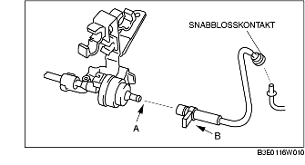
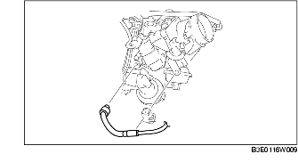

DEMONTERING/MONTERING AV AVLUFTNINGSVENTIL [LF]
B3E011618740W01
1. Ta bort tändstiftskyddet.
2. Demontera batterikåpan. (Se DEMONTERING/MONTERING AV BATTERIET [LF].)
3. Lossa batteriets minuskabel.
4. Demontera enligt följande:
-
Försiktigt
-
• Koppla inte ur avluftningsventilen eller avluftningsslangen annat än vid byte av avluftningsventilen eftersom det kan orsaka läkage av avdunstninsgas. Då det är nödvändigt att koppla ur avluftningsventilen för demontering/montering av andra delar, koppla ut ventilen vid snabblosskontakten.
-
(1) Koppla ur avdunstningsslangen på kolkanisterns sida. (Se Observera vid montering av avluftningsslang.)

-
(2) Dra loss vakumslangen från insugningsröret.

5. Montera i omvänd ordning mot demonteringen.
Observera vid montering av avluftningsslang
1. Montera avluftningsslangen och klämman så som visas på bilden.